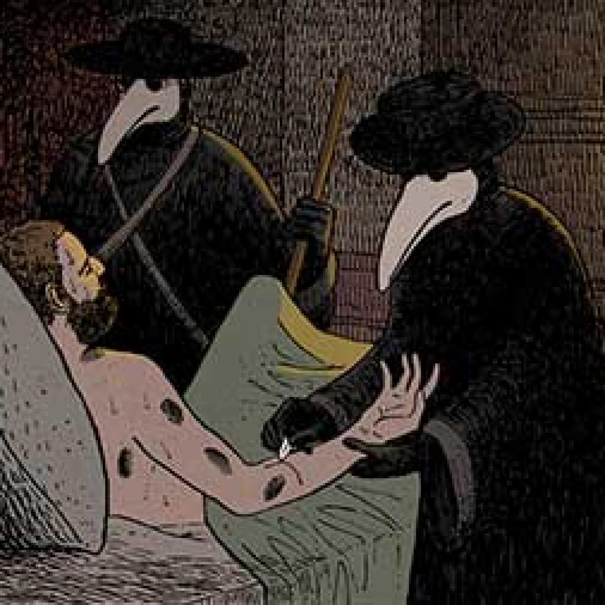

Um Terror Erradicado |
|
|---|---|
|
Peste negra (ou Morte negra) é o nome pela qual ficou conhecida uma das mais devastadoras pandemias na história humana, resultando na morte de 75 a 200 milhões de pessoas na Eurásia. Somente no continente europeu, estima-se que tenha vitimado pelo menos um-terço da população em geral, sendo o auge da peste acontecendo entre os anos de 1346 e 1353. A doença é causada pela bactéria Yersinia pestis, transmitida ao ser humano através das pulgas (Xenopsylla cheopis) dos ratos-pretos (Rattus rattus) ou outros roedores. Acredita-se que a peste tenha surgido nas planícies áridas da Ásia Central e foi se espalhando principalmente pela rota da seda, alcançando a Crimeia em 1343. No total, a praga pode ter reduzido a população mundial de em torno de 450 milhões de pessoas para 350–375 milhões em meados de século XIV. A população humana não retornou aos níveis pré-peste até o século XVII. A peste negra continuou a aparecer de forma intermitente e em pequena escala pela Europa até praticamente desaparecer do continente no começo do século XIX. |
|
|  |
As populações de alguns roedores das pradarias viviam em altíssimos números em enormes conjuntos de galerias subterrâneas que comunicavam umas com as outras. O número de indivíduos nestas comunidades permitia à peste estabelecer-se porque, com o constante nascimento de crias, havendo sempre suficiente número de novos hóspedes de forma contínua para a sua manutenção endémica. Naturalmente que as populações de ratos e de humanos nas (pequenas) cidades medievais nunca tiveram a massa crítica contínua de indivíduos susceptíveis para se manterem. Nessas comunidades de homens, a peste infectava todos os indivíduos susceptíveis até só restarem os mortos e os imunes. Só após uma nova geração não imune surgir e se tornar a maioria, a peste regressou nas comunidades humanas, portanto, a peste atacava em ondas de epidemias. |
|
A peste negra gerou vários impactos e consequências religiosas, sociais e econômicas, afetando drasticamente o curso da história europeia. A doença voltou a cada geração à Europa até ao início do século XVIII. Cada epidemia matava os indivíduos susceptíveis, deixando os restantes imunes. Só quando uma nova geração não imune crescia é que havia novamente suficiente número de pessoas vulneráveis para a infecção se propagar. No entanto nenhuma destas epidemias foi tão mortal como a primeira, devido às modificações de comportamento e à eliminação dos genes (como alguns do MHC- ver sistema imunitário) que davam especial susceptibilidade aos seus portadores. O Grande fogo de Londres logo no ano seguinte, em 1666 queimou completamente as casas de madeira e telhados de colmo comuns até então, e novos materiais como a pedra, os tijolos e as telhas foram usados na construção de novas casas, contribuindo para afastar os ratos das habitações. O mesmo processo, aliado a melhores condições de higiene e à substituição do rato preto pelo rato cinzento (Rattus norvegicus, que evita as pessoas), e à resistência genética crescente das populações, contribuíram para o declínio contínuo das epidemias de peste na Europa. |
|